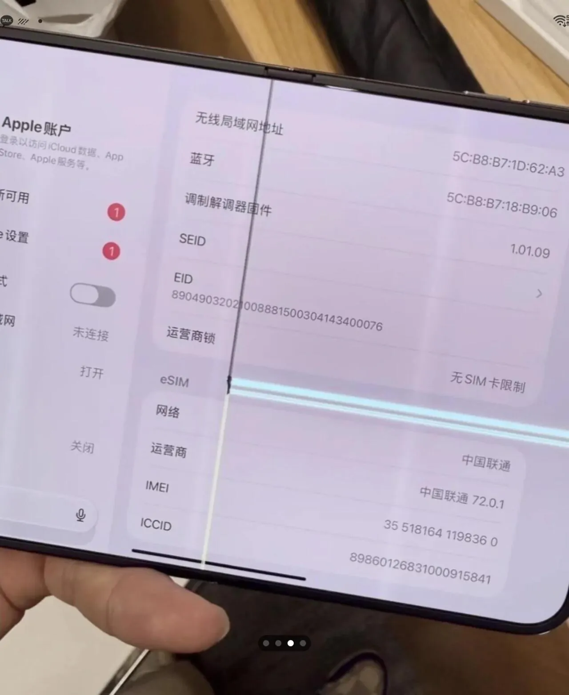

크랙게이트?
그래 처음만든거니까 설계 븅신같이했을수있지
넘어갈수있음 (내가안샀기때문)
그토록 자랑했던 반 접어쓰는 유튜브 - 좆버그
걍 총체적 난국 ㅅㅂㅋㅋㅋㅋㅋ
그토록 잘한다던 하드웨어 설계와 맞춤형 소프트웨어의 어쩌구 < 대실패
ㅋㅋㅋㅋㅋㅋㅋㅋㅋㅋㅋ

크랙게이트?
그래 처음만든거니까 설계 븅신같이했을수있지
넘어갈수있음 (내가안샀기때문)
그토록 자랑했던 반 접어쓰는 유튜브 - 좆버그
걍 총체적 난국 ㅅㅂㅋㅋㅋㅋㅋ
그토록 잘한다던 하드웨어 설계와 맞춤형 소프트웨어의 어쩌구 < 대실패
ㅋㅋㅋㅋㅋㅋㅋㅋㅋㅋㅋ
??? : 와 애플은 다르다, 삼성이 8까지 와서 좋아진걸 애플은 1세대만에 감성이 어떻고 어쩌구 저쩌구 ㅋㅋㅋㅋㅋㅋㅋㅋㅋㅋㅋ
힌지 각도에 센서 건거 같은데 ... 쓰다보면 헐거워져서 미세하게 덜렁이는 듯
유튜브 버그는 소프트웨어 업데이트로 금방 해결되겠는데
힌지문제가 심각하네
저거 가로세로줄 생기는거 폴드1때 문제아닌가
힌지문제긴한듯..
붕쯔붕쯔
버그같은건 소프트웨어문제라면 별로 상관없지 금방 고칠텐데 힌지같은 하드웨어 결함이 있으면 그게진짜문제임
유튭 개지랄 난거 개웃기네 ㅋㅋㅋ
개흥겨움ㅋㅋㅋㅋㅋ
정말 통쾌했어요!
두번째 짤은 존나 힙한데 ㅋㅋ
사이버펑크 감성 미쳤다
쩍!
버그도 느낌이 있네
1세대는 사는게 아니라니깐...
크으 애플이 하면 다르다
애플이 하면 통쾌하다
SW버그가 차라리 오케이지..
하드웨어는 어떻게될지 감도안옴